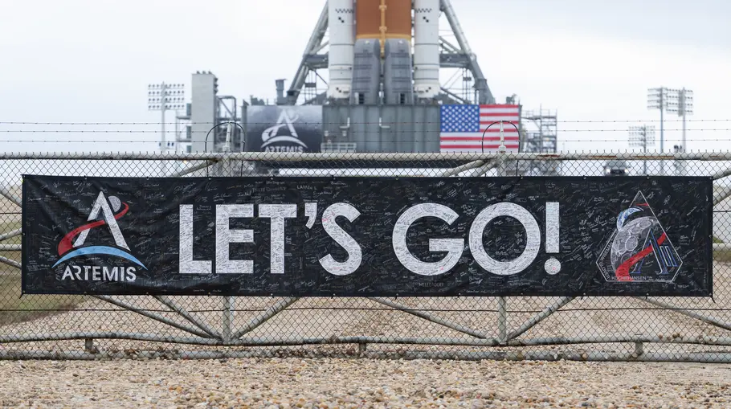
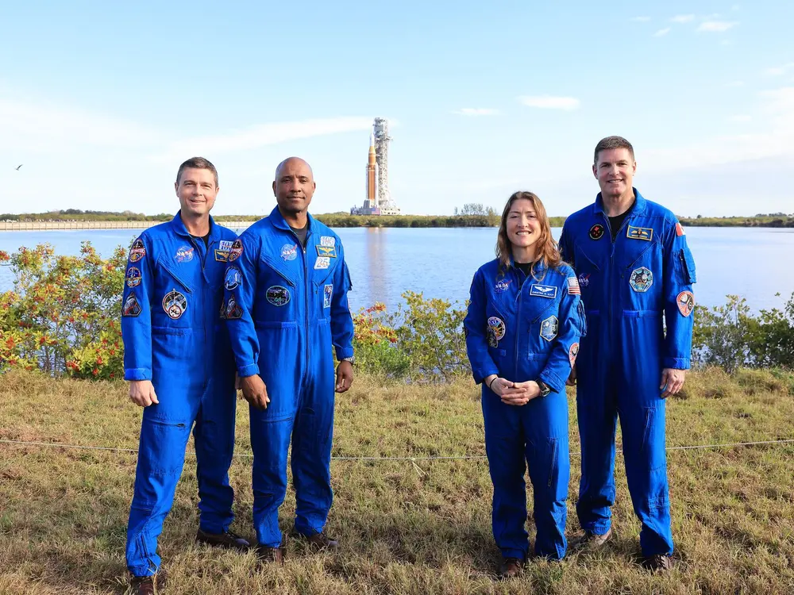
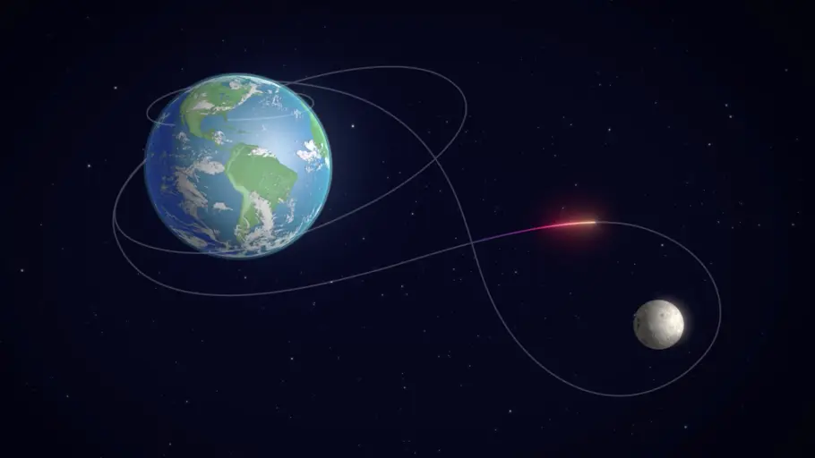

Artemis II and the Physics of Humanity's Return Beyond Earth Orbit
Artemis II is NASA's first crewed mission of the Artemis programme and represents the first time since the Apollo era that humans will travel beyond low Earth orbit and return to the vicinity of the Moon. Unlike Artemis I, which was uncrewed, Artemis II will carry four astronauts aboard the Orion spacecraft on a translunar trajectory around the Moon before safely returning to Earth.
The mission is not merely an engineering achievement it is a demonstration of orbital mechanics, gravitational physics, and advanced trajectory design. Every stage of the mission is governed by mathematical laws developed centuries ago by Newton, Kepler, and later refined through modern computational physics.

What Is Artemis II?
Artemis II is the second major mission in NASA's Artemis programme and the first mission to carry astronauts aboard the Orion spacecraft. The spacecraft will be launched using the Space Launch System (SLS), currently the most powerful rocket ever built by NASA.
Unlike Apollo missions that entered lunar orbit, Artemis II is designed primarily as a crewed lunar flyby mission. The spacecraft will travel approximately 370,000 to 400,000 kilometres from Earth, loop around the Moon using gravitational mechanics, and return home over the course of roughly ten days.
The mission serves as a full systems test for future lunar landing missions such as Artemis III. During the mission, astronauts will evaluate Orion's life support systems, navigation systems, propulsion systems, and deep-space communication capabilities.

The Physics of Space Travel
The motion of the Orion spacecraft throughout the mission is governed entirely by gravity. According to Newton's law of gravitation, every massive object attracts every other mass with a force proportional to their masses and inversely proportional to the square of the distance between them.
The spacecraft's position evolves according to the fundamental equation of motion:
r̈ = − GM⁄r3 r
Here, r represents the position vector of the spacecraft, G is the gravitational constant, and M is the mass of the attracting body. The acceleration is always directed toward the centre of the attracting mass.
This equation is nonlinear and generally difficult to solve exactly, but in the special case of a single dominant gravitational body, it produces conic-section trajectories such as circles, ellipses, and parabolas.
Low Earth Orbit and Orbital Velocity
Before traveling toward the Moon, Orion first enters low Earth orbit. At this stage, the spacecraft travels at roughly 7.8 kilometres per second.
Contrary to intuition, the spacecraft is not continuously flying upward. Instead, it is constantly falling around Earth while moving forward fast enough that the curvature of its trajectory matches the curvature of Earth's surface.
The balance between gravitational acceleration and centripetal acceleration is:
v2⁄r = GM⁄r2
Solving for orbital velocity gives:
v = √ GM⁄r
This equation determines the velocity required for a stable orbit around Earth. If the spacecraft travels too slowly, it falls back to Earth. If it travels too quickly, it escapes Earth's gravitational field entirely.
Trans-Lunar Injection (TLI)
To leave Earth orbit and travel toward the Moon, the spacecraft performs a Trans-Lunar Injection burn. During this manoeuvre, the rocket engines increase the spacecraft's velocity by a carefully calculated amount known as delta-v.
This additional velocity changes Orion's orbit from a nearly circular Earth orbit into a long elliptical trajectory extending toward the Moon.

The total change in velocity that a rocket can produce is determined by the Tsiolkovsky Rocket Equation:
Δv = ve ln ( m0⁄mf )
Here, ve is the effective exhaust velocity, m0 is the initial mass of the rocket including fuel, and mf is the final mass after fuel burn.
The logarithmic relationship explains why space travel requires enormous amounts of fuel. Achieving slightly larger values of Δv requires exponentially more propellant.
The Three-Body Problem
As Orion travels farther away from Earth, the Moon's gravity becomes increasingly important. At this point, the spacecraft is influenced simultaneously by Earth and the Moon.
This creates a restricted three-body problem one of the most famous problems in classical mechanics.
The gravitational potential governing the motion becomes:
Φ = − GME⁄|r − rE| − GMM⁄|r − rM|
The resulting equation of motion is:
r̈ = − GME⁄ |r − rE|3 (r − rE) − GMM⁄ |r − rM|3 (r − rM)
Unlike the simple two-body case, this system has no general closed-form solution. Modern missions therefore rely heavily on numerical integration, simulations, and supercomputers to calculate trajectories with extreme precision.
Free Return Trajectory
One of the most elegant aspects of Artemis II is the use of a free-return trajectory. This trajectory is carefully designed so that if the spacecraft loses propulsion after the initial burn, gravity alone will naturally carry it around the Moon and back to Earth.

The effective change in velocity due to the Moon's gravitational influence can be represented as:
Δveff = ∫ aMoon dt
As Orion passes near the Moon, its velocity vector changes direction due to the Moon's gravity. This process is similar to a gravitational slingshot and allows the spacecraft to return toward Earth without requiring large additional fuel burns.
Energy, Momentum, and Orbital Dynamics
Throughout the mission, angular momentum and energy are conserved. The angular momentum of the spacecraft is given by:
L = r × mṙ = constant
The total energy of the spacecraft can be described using the Lagrangian:
L = 1⁄2 m|ṙ|2 + GMm⁄r
The equations of motion follow from the Euler-Lagrange equation:
d⁄dt ( ∂L⁄∂ṙ ) − ∂L⁄∂r = 0
These equations form the mathematical foundation of orbital mechanics and modern spacecraft trajectory design.
Why Artemis II Matters
Artemis II represents humanity's return to deep space after more than fifty years. The mission will validate the technologies and flight systems required for future lunar landings and eventually human missions to Mars.
Although the mathematics behind the mission is rooted in classical physics, modern computational methods allow engineers to solve these equations with unprecedented accuracy. Real-time trajectory corrections, numerical simulations, and advanced navigation systems make missions like Artemis II possible.
In many ways, Artemis II can be understood as one enormous applied physics problem. Every orbit, manoeuvre, and trajectory correction is governed by the same physical laws discovered centuries ago — but now executed with modern precision and technology.